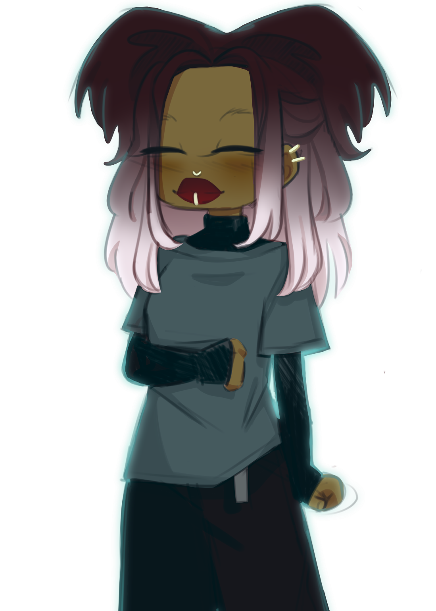
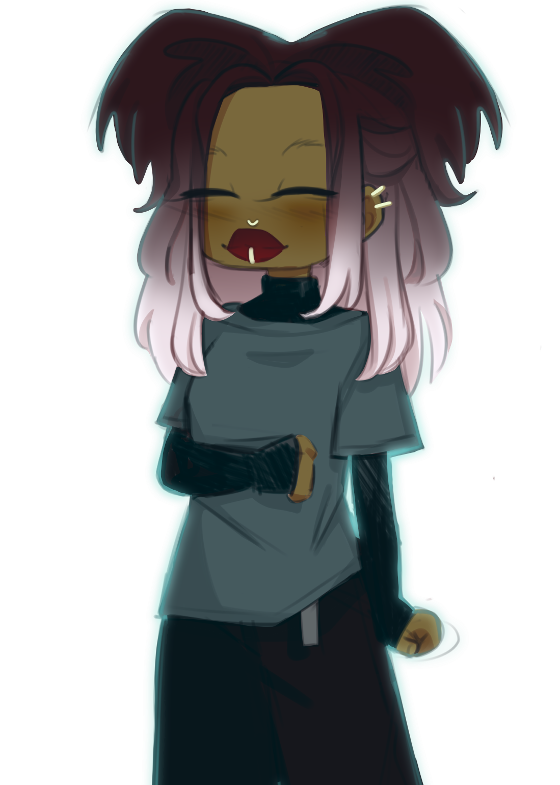
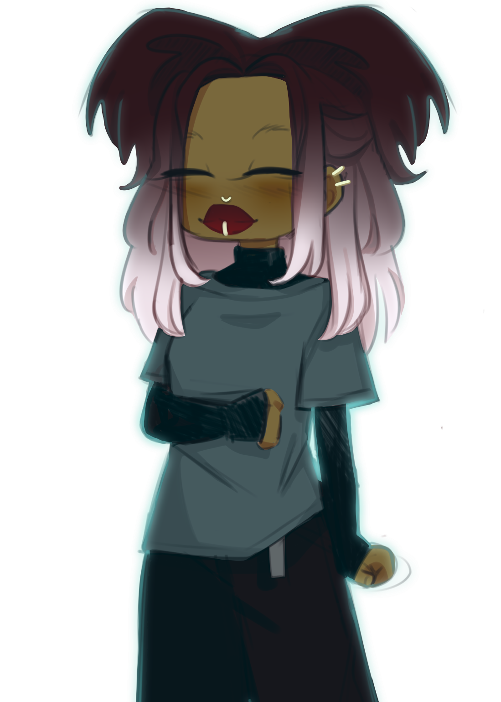

Deja coudn't help her smile as she phased through the gate. "No fair." Neveah pouted, "You can just float by, I have to manually go through things. All Deja could do was laugh at her supposed distress, Neveah joining in while she opened the gate. They finally made their way in. Despite it being a graveyard it felt oddly soothing. Like they stepped into their own little pocket of the world off to the side.
